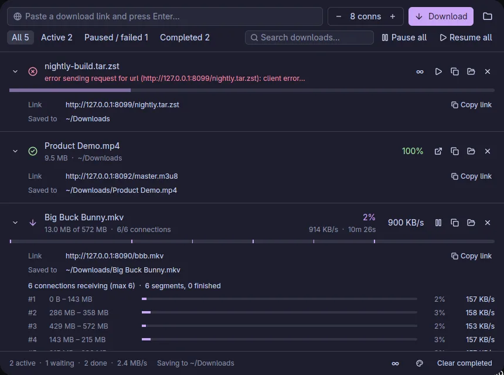
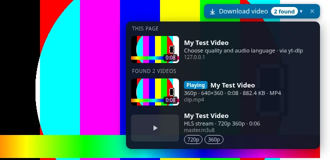
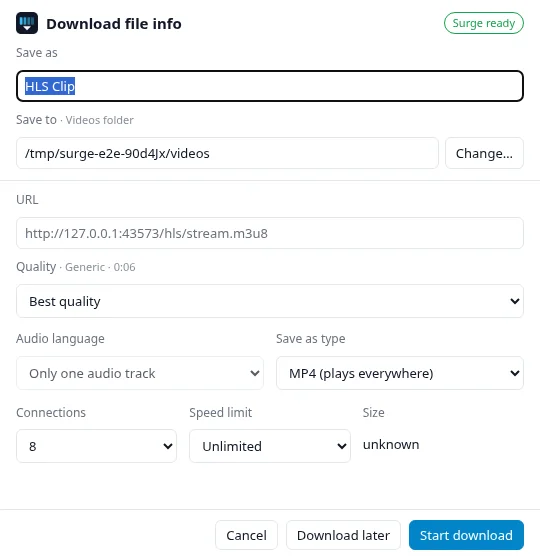
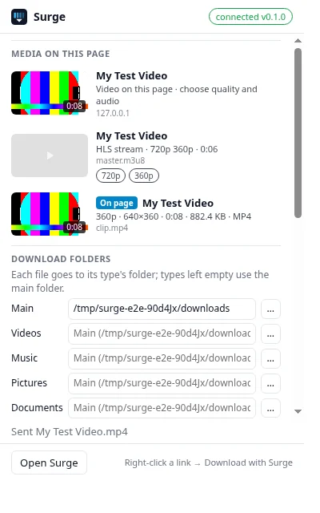
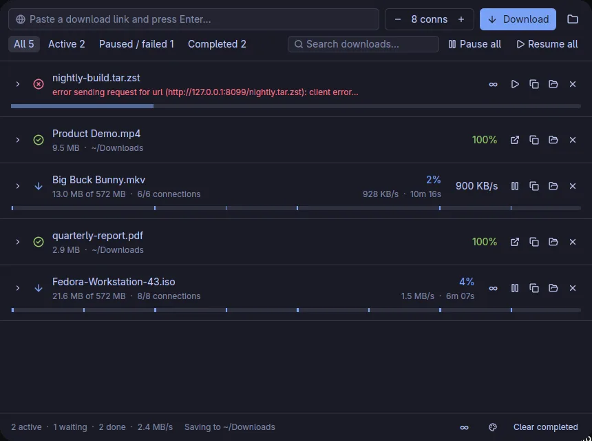
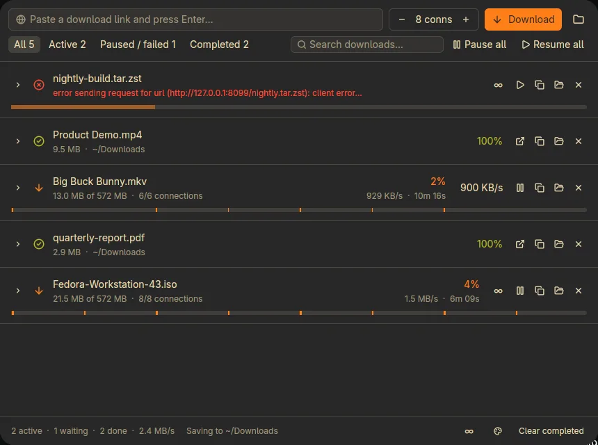

Every connection, busy until the last byte.
Hurtle splits a download into segments over parallel connections. When a connection finishes, it takes over half of the slowest remaining segment, so all of them finish together. It also saves video from the browser through yt-dlp. Free and open source for Windows, macOS and Linux.
curl -fsSL https://arafays.github.io/hurtle/install.sh | shFree and open source · Windows · macOS · Linux · Chrome, Brave, Edge, Firefox, Zen
Get Hurtle
Install the app, then add the extension to your browser. The first time the app runs, it registers itself with every Chrome-family browser and Firefox it finds.
.zip on the release page is the portable build.
Download
macOS, Apple siliconhurtle-…-macos-aarch64.dmg
Drag Hurtle.app to Applications and open it.
Download
macOS, Intelhurtle-…-macos-x86_64.dmg
Same as Apple silicon.
Download
Linux, x86‑64hurtle-…-linux-x86_64.tar.gz
Extract and run ./install.sh, or just ./hurtle. Includes a tray icon.
Download
Linux, ARM64hurtle-…-linux-aarch64.tar.gz
Same as x86‑64.
Download
Chrome, Brave, Edge extensionhurtle-chrome-….zip
Unzip, open chrome://extensions, turn on Developer mode, then Load unpacked. Keep the unzipped folder where it is: the browser loads it from there. Not on the Chrome Web Store.
Download
Firefox, Zen, LibreWolf add-onhurtle-firefox-….xpi
Signed by Mozilla. Needs Firefox 142 or newer. Open the file and confirm the install. It updates itself after that.
Download
Or install from a terminal
Linux and macOS
curl -fsSL https://arafays.github.io/hurtle/install.sh | sh
Installs without sudo, into ~/.local on Linux, or /Applications on macOS (~/Applications if that is not writable; override with HURTLE_APPDIR). It checks the download against the release's SHA-256 sums and registers the browser host. Remove it with the same command plus sh -s -- --uninstall.
Windows (PowerShell)
irm https://arafays.github.io/hurtle/install.ps1 | iex
Per user, no admin rights, checksum verified. Prefer a wizard? Use the setup.exe above. Remove it with & ([scriptblock]::Create((irm https://arafays.github.io/hurtle/install.ps1))) -Uninstall.
First launch. Windows builds are unsigned, so SmartScreen may say “Windows protected your PC”: choose More info, then Run anyway. macOS builds are not notarized: if macOS blocks the app or calls it damaged, run xattr -dr com.apple.quarantine /Applications/Hurtle.app, or use System Settings → Privacy & Security → Open Anyway.
No slow straggler at the end
Many servers cap each connection. Hurtle opens several, each fetching its own byte range of the file, and keeps them all busy until the download is done.
Dynamic segmentation
An idle connection first picks up an orphaned segment, then takes over a stalled one (no data for 10 s), and otherwise splits the segment with the longest time left. The cut is weighted so both halves finish together.
Ramps up, backs off
A download starts with up to 4 connections and adds more while throughput keeps rising, up to your limit. A 429, 503 or connection error halves the count.
HTTP/1.1 on purpose
HTTP/2 would carry every segment over one TCP connection, and the per-connection cap would apply again.
Resumes where it stopped
Data is written in place into a preallocated file, with no merge step. State is saved every 2 seconds, so after a pause, quit or crash the download continues from the same position. Size and ETag are checked first.
Speed limits that change live
One limit per download, shared by its connections, and one global limit across all downloads. Change either while a download runs.

An expanded row lists every connection: its byte range, progress and speed.
It catches downloads where you start them
The extension for Chrome-family browsers and Firefox pauses the browser's own download and opens one dialog. Rename the file, pick connections and a speed limit, choose the folder, and start. Cookies and the Referer are forwarded, so downloads behind a login still work.

Hover a video
A button appears above any video. Its menu lists the page, the files it found and the stream qualities, with thumbnails, length and size.

Choose what to save
Quality, audio language, file type, folder, connections and speed limit. Then Start, Download later, or hand it back to the browser.

Or open the popup
Everything found on the page, plus your download folders. It works even while the app is closed.

Plain files and streams in one list. Product Demo.mp4 came from an HLS stream through yt-dlp.
Video sites and streams, without the command line
YouTube and most video sites serve many small pieces, often with audio and video apart. HLS and DASH work the same way. Hurtle hands these to yt-dlp, and ffmpeg merges the result into one file.
The original audio
YouTube adds auto-dubbed tracks to many videos. Hurtle picks the original language and lists the others.
Your format
MP4 that plays everywhere, MKV, the original container, or audio only as MP3, M4A or Opus.
Real titles
Files are named after the video, not videoplayback?id=….
Paste a link
Paste a page link in the app. If the server answers with a page or a stream, Hurtle switches to yt-dlp.
Looks like the rest of your desktop
On Linux, Hurtle reads your system theme: Omarchy, Noctalia, pywal, wallust, Stylix, GTK and KDE colors, and re-themes live when they change. Everywhere else, pick light, dark or a preset.

Each file type can go to its own folder: videos, music, pictures, documents, archives, programs.
More ways to install
Packages
- Debian and Ubuntu: download
hurtle_<ver>_amd64.deb(orarm64) from the releases page, thensudo apt install ./hurtle_*.deb. It also registers the browser host for Chrome, Chromium, Edge and Firefox system-wide. - Arch Linux: a
hurtle-binPKGBUILD is in packaging/linux/aur. It is not on the AUR yet, so build it withmakepkg -si. - Homebrew: a cask file is in packaging/macos. It is not in a tap yet, so there is no
brew installline to copy.
For video sites and streams
Nothing to install. Hurtle uses yt-dlp, ffmpeg and deno if you have them, and otherwise fetches them from their official releases the first time you save a video (checksums verified). If you'd rather install them yourself:
winget install yt-dlp.yt-dlp Gyan.FFmpeg DenoLand.Deno brew install yt-dlp ffmpeg deno pacman -S yt-dlp ffmpeg deno
Good to know
- The tray icon is Linux-only for now. On Windows and macOS, closing the window quits Hurtle, and the next browser download starts it again.
- Flatpak and Snap browsers can't start programs outside their sandbox. Use your distro's browser package.
- The Firefox add-on is signed by Mozilla but not listed on addons.mozilla.org. Firefox checks this site for new versions about once a day, and you can check now under
about:addons→ ⚙ → Check for Updates.
Build from source
Tooling is pinned with mise.
git clone https://github.com/arafays/hurtle cd hurtle && mise install mise run install